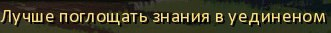
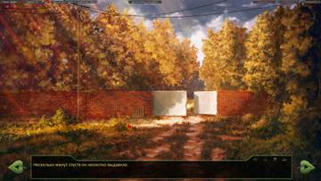
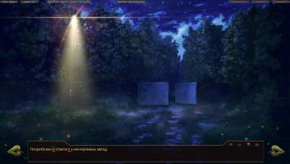
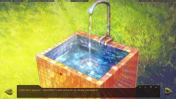

Спасибо, исправлю!
7 дней лета, v.031e (Мику-7дл, эпилог)
Сообщений 451 страница 471 из 471
Поделиться4512017-07-16 21:14:42
- Вахаха!~

- Откуда: Санкт-Петербург
- Зарегистрирован: 2015-10-21
- Сообщений: 344
- Пол: Мужской
- Последний визит:
Сегодня 16:44:15
Поделиться4522017-07-16 23:48:17
7dl-kun написал(а):
Спасибо, исправлю!
Снова подъехала ошибочка.
Рут кошечки, 4-ый день, повелитель книг.

уединённом местеПоделиться4532017-07-16 23:48:49
salotor написал(а):
alt_route_sl_cl.rpy
Если играем не за Локи и проходим по условиям на инт-ветку, то при выборе "Я обязательно вернусь за тобой." следует нелогичная реплика Саныча
Но там же перед тем, как Сёмыч "ушёл в себя" (ушёл в Шизу), идут следующие фразы беседы:
Последние фразы "внешнего" диалога со Славей
sl "Ты не можешь, не имеешь права заставлять меня выбирать между такими вещами, слышишь, ты?!"
me "Славя…"
sl "Да как ты можешь. Ты не понимаешь, что бесчеловечно делать так?!"
sl "Я не хочу. {w}Я хочу, чтобы и ты, и он. Нет, должен быть другой способ."
me "Телепортация в город? Славя, мы не успеем на машине!{w} Слышишь?"
Потом Сёмыч может сказать вслух "Я обязательно вернусь за тобой", но Саныч может проигнорировать это, заявив "вообще-то, если ехать быстро, то вполне успеете."
Найденная мной ошибка в коммоне
alt_route_common.rpy
if alt_day1_sl_conv:
"Тут мне в голову пришла одна мысль, которую следовало бы озвучить…"
"Да хотя бы из вежливости!"
me "Кхм…"
"Я нахмурился."
me "Не то, чтобы я настаивал."
me "Но мы же незнакомы ещё, да?"
show sl laugh pioneer at center with dissolve
"Она рассмеялась."
sl "Твоя правда, извини."
sl "Меня все в лагере называют Славей."
$ meet('sl','Славя')
me "Ясно."
"Я замолчал."
"И молчал долго."
"Пока у девушки не лопнуло терпение."
show sl serious pioneer with dspr
sl "Разве ты не скажешь, что тебе очень приятно?"
th "Какая прелесть. {w}А мне приятно или не очень?"
me "А. Да."
"Согласился я."
show sl shy pioneer with dspr
"Немного подождав, девушка махнула рукой — видимо, поняла, что каши со мной не сваришь."
play sound sfx_knock_door7_polite
$ renpy.pause(2)
mt "Открыто!"
sl "Меня зовут Славя. {w}Просто если тебе вдруг интересно."
"Не дожидаясь моего ответа, она толкнула дверь, и мне ничего не оставалось, как последовать за ней."
Славя в ходе беседы перед домиком вожатой представляется аж 2 раза. Во второй несколько холоднее, чем в первый. Полагаю, нужно добавить дополнительную проверку на какой-либо параметр или убрать одно из приветствий насовсем.
Поделиться4542017-07-17 00:06:34
- Хикикомори

- Откуда: Тёплые пески Эльсвейра
- Зарегистрирован: 2015-10-30
- Сообщений: 186
- Последний визит:
2018-04-16 21:28:48
Xuande313 написал(а):
Славя в ходе беседы перед домиком вожатой представляется аж 2 раза. Во второй несколько холоднее, чем в первый. Полагаю, нужно добавить дополнительную проверку на какой-либо параметр или убрать одно из приветствий насовсем.
А ты уверен, что это ошибка? Рут её внимательно читал?
Поделиться4552017-07-29 14:13:36
- Хикикомори

- Зарегистрирован: 2016-08-11
- Сообщений: 134
- Пол: Мужской
- Последний визит:
Сегодня 00:44:36
alt_route_me_zneutral
Код:1417 "Славя? Хм. Кажется, я пользуюсь сегодня у неё популярностью." dreamgirl "Ну да, впервые за три дня удостоил её больше, чем парой слов."Семён вполне мог тесно общаться с ней в первые три дня: судить волейбол, подбирать ведущего для дискотеки, даже пытаться выйти на её рут, так что фраза Шизы не всегда к месту. Возможно, стоить добавить проверки на ивенты со Славей.
Код:2391 if alt_day2_rendezvous == 3 and not alt_day3_dv_dj: "Новое действующее лицо я отметил с неудовольствием." "Вот уж чьё лицо, точнее, чью харю я бы с удовольствием забыл." И далее.Код:2555 if alt_day2_rendezvous == 3 and not alt_day3_dv_dj: th "Не думал, что ей хватит наглости подойти ко мне." dreamgirl "После той подставы?" dreamgirl "Судя по всему, для неё такое в порядке вещей."Код:3728 if alt_day3_dv_evening or (alt_day2_rendezvous == 3 and not alt_day3_dv_dj): me "Нет уж, спасибо." me "Удивлён, что тебе нахальства хватает подходить ко мне после утреннего." И далее.Девочка погуляла с Семёном по лагерю во 2 дне, а он о ней так отзывается. Нехорошо.
Из всех этих проверок только alt_day3_dv_evening подразумевает сближение с Алисой в коммоне, которое вылилось в утреннюю подставу. Прогулки во 2 дне явно недостаточно для лидирования Алисы по ЛП, так что утренний ивент в 4 дне мог быть и с другой девочкой.
Нужно заменить все эти проверки на if alt_day4_neu_date == 3, чтобы чтобы Семён не злился на Алису без повода.Код:2877 if alt_day4_neu_mt_volley: ... else: "Ольга Дмитриевна тоже выглядела помятой и унылой." ... 3051 if not alt_day4_neu_mt_volley:Вторая проверка на волейбол не нужна, само else уже подразумевает это.
Код:3702 if mt_pt > 0: me "Ольга Дмитриевна попросила найти вас и напомнить о том, что к завтрашнему костру нужно подготовить несколько песен." И далее.Набрать mt_pt можно не только в ивенте у столовой, от которой вожатая посылает Семёна к Мику и Алисе. Под вариантом 3471"Отдохнуть на скамеечке.", после которого Семён автоматически идёт на эстраду, нужно добавить переменную, которая и будет проверяться в данном случае.
Код:3844 th "Эх, надеюсь, не стану причиной хроноклазма — в отличие от сомнительной даты написания «лирики», эта была написана Бутусовым 95-м году абсолютно точно."Лирика под alt_day2_loki_minijack.
Код:4933 "Видимо, собирать свой секретный проект, о котором он никому не имел права рассказывать." me "Любопытно, что бы это могло быть?" "Пробормотал я под нос, колеблясь между очередными очумелыми поделками и порно-журналами. " with fade2 "Ладно, всё это потом. Сейчас самое главное — это выжить до обеда."Чуть выше в разговоре "секретный проект" упоминался только при упавшем Шурике. Нужно убрать под if not (alt_day4_fz_sh == 1 or alt_day4_fz_sh == 4) and alt_day3_technoquest_st3 != 2.
Код:5201 "Времени в этой земле обетованной у меня оставалось всё меньше и меньше." "Но это был совсем не повод ходить невыспавшимся." "О, такую уникальную возможность мне моя жизнь ещё предоставит с лихвой." window hide stop ambience play music promise_to_meet_you fadein 3 "Книжка открылась странная, незнакомая."Во времена "вишенки" между этими строками был выбор "Лечь спать."/"Полежать, почитать.", который и объяснял вариант с книжкой, а теперь происходит слишком резкий перход от желания поспать к чтению. Надо бы его смягчить.
Код:5310 "Всё тот же стол, заваленный платами, проводами и радиотехническим барахлом, из которого кибернетики так и не построили свой секретный проект."Снова секретный проект, о котором говорил Эл только при упавшем Шурике.
Код:5119 if alt_day4_neu_mt_songs: me "Или ты собираешься на пианино подбирать мелодию?" show mi normal pioneer at zenterleft mi "Да нет, Сенечка. Просто, понимаешь, вчера был концерт, а после него сцена осталась — сам видишь какой.""Да нет, Сенечка" - ответ на заданный выше вопрос. Ему нужна аналогичная проверка.
Код:5844 if alt_day3_dancing == 5: "Хотя слишком уж там в десяточку было её угадывание…"Расширенная версия разговора, с эрогенной зоной и внутренним болваном, есть у Герка и Локи, но только Локи через неё может выйти на рут Ольги. Нужно добавить его в проверку.
Код:5906 "Следы пяток на песке вели в третью кабинку, так что у меня было целых три варианта — бездна разнообразия!"Третий вариант открывается только при if mt_pt >= 4.
Код:7247 sl "«Сегодня после полдника пионер первого отряда Персунов с какой-то девочкой ушёл из лагеря! С ними никого не было.» Без подписи."Сычёва не хватает.
Поделиться4562017-07-29 15:09:45
- Хикикомори
- Зарегистрирован: 2016-08-11
- Сообщений: 134
- Пол: Мужской
- Последний визит:
Сегодня 00:44:36
alt_route_mt_7dl
Код:435 if alt_day1_sl_conv: dreamgirl "Ты только представь её в купальнике? Там же явно всё по заветам Ильича!" else: dreamgirl "Могу напомнить, как она выглядит в своём бронебойном бикини." dreamgirl "Как и то, куда ты пялился. Будешь?"В прошлом репорте я упоминал нехватку проверки на альтдень (7 дней лета, v.031e (Мику-7дл, эпилог)), но оказалось, что там все сложнее. В обычном дне Дрищ теперь тоже не доходит до пристани, а в третьем дне все имеют авозможность лицезреть Славю на волейболе. Таким образом, if alt_day3_sl_event or (alt_day_binder != 1 and not alt_day1_sl_conv and (herc or loki)) будет соответствовать "бронебойному бикини", а else к нему - влажным фантазиям Шизы.
Код:741 "Сам пляж едва ли бы пригодился мне, но моё чутьё подсказывало, что дальше, вполне возможно, я сумею найти достаточно уединённое местечко."Код:749 "Чутьё меня не подвело!" "Здесь и правда было неплохое местечко для одиночек всех мастей."Код:755 "Моему вниманию предстал необъяснимо знакомый пейзаж: кривая, растущая «в площадь» сосна, от самых корней которой в воду полого уходил каменный язык."Локи мог побывать тут с Леной после турнира, но потом зафейлить выход на её рут и уйти на ОД. В таком случае, он знает о наличии дальнего участка пляжа, так что не в чутье дело. Нужны развилки по alt_day2_date == 11.
Код:766 if alt_day5_mt_7dl_hentai: "Не было никаких сомнений в том, что для нашей вожатой я значу куда больше, чем просто один из её пионеров." "Даже если в этом были какие-то сомнения, после вчерашнего они отвалились напрочь." else: "Дураку было понятно, что в дневнике вожатой речь шла обо мне." "Или о ком-то, крайне похожем на меня." dreamgirl "Чувак, вообще-то, ты сейчас не совсем собой являешься, помнишь?" me "Точно." th "Значит, логично предположить, что у этого юного Семёна был своего рода роман с Ольгой, прежде, чем я поселился в нём на правах шизофрении?"Код:779 if alt_day5_mt_7dl_hentai: "То, чем мы занимались, с моей точки зрения, малость высоковатая цена за возможность поводить пионера за нос." "Если только она не относится к этому иначе, чем я." "Или вообще — как и все спецслужбы мира, советская госбезопасность вовсе не гнушалась и такого рода воздействиями." dreamgirl "Ольга? Агент? Не смешите мои тапочки." dreamgirl "Много она для безопасности сделает, днюя и ночуя то на пляже, то в гамаке с женским романом наперевес?" th "Ну, я тогда не знаю."Код:970 if alt_day5_neu_mt_diary: th "Помнишь, в дневнике? «От его поцелуев кружится голова»." elif alt_day5_mt_7dl_hentai: th "Потому что она в итоге затащила меня в постель, пусть и таким вот образом." else: th "Слишком много совпадений, слишком многое указывает на неё."Проверки на хентай не работают, выход на эту сцену происходит только если хентая не было, а было чтение второй части дневника.
Код:999 if alt_day5_mt_7dl_hentai: "И орать хотелось от того, насколько поздно я вспомнил самое главное." "Вспомнил — не нас." "Их." "Ольгу. Олю. Оленьку." "И шестандцатилетнего Сэма" if alt_day5_neu_mt_diary: extend ", от поцелуев которого у неё кружилась голова." else: extend ", мелкого придурка, умудрившегося вслепую получить самый главный приз — и одновременно изувечить жизнь и ей, и мне, бестелесному наблюдателю."А тут уже не работает проверка на дневник.
Код:1310 if alt_day4_neu_mt_diary and alt_day5_neu_mt_diary: jump alt_day6_mt_7dl_diary3Третье чтение дневника доступно только при наличии первых двух.
И далее:Код:1581 label alt_day6_mt_7dl_diary3: ... 1593 if alt_day4_neu_mt_diary: $ mt_pt += 1 if alt_day5_neu_mt_diary: $ mt_pt += 1 1675 if alt_day5_neu_mt_diary: "Уже один раз досталось за него, не буду давать поводов." "Лучше — на обед."Проверки не нужны, эти условия и так обязательны для выхода на данную сцену.
Код:1858 if persistent.mt_7dl_good: pass else: "Конечно, будет крайне обидно, если там что-то изменилось." "Например, замок поставили другой." "Но, к счастью, нет."Тут нужна проверка не на гуд, а на alt_day5_mt_7dl_hentai, приводящий к посиделкам с Алисой.
Код:1737 if persistent.mt_7dl_good: me "И чем я тебе таким намазан?" else: me "Почему тебе с Алисой не гуляется?"То же самое. Семён в курсе, что Алиса временно недееспособна, только при хентае, но не при гуде.
Код:1875 if persistent.mt_7dl_good: "В воздухе отчётливо пахло спиртным." th "Или это соматическое?" if alt_day5_mt_7dl_hentai: "Так или иначе, где сидела Алиса, на ступеньках до сих пор можно было разглядеть пару пятнышек — в полутени они просыхали довольно медленно."Опять же под хентаем должно быть, а не под гудом.
Код:2182 "Я довольно успешно профилонил подготовку к предыдущим танцам, но в этот раз сбежать, похоже, не получится."Не факт, что профилонил. Можно добавить проверку на вербовку диджея.
Код:2699 label alt_day6_mt_7dl_declare ... 2706 "Я остался один." "Честно сказать, очень странно, что она не стала распекать меня за то, что я сбежал утром." dreamgirl "Возможно, для неё это и правда было делом жизни и смерти?" "Я пожал плечами." "Какими бы ни были мотивы девочки, для меня они остались загадкой." "Но они достигли определённой цели."Начало повествования в label alt_day6_mt_7dl_declare привязано к событиям катапульты, но попасть туда можно и напрямую:
Код:if mt_pt <= 13: jump alt_day6_mt_7dl_choice else: jump alt_day6_mt_7dl_declareСтроки с упоминанием Слави нужно убрать под проверку на alt_day6_mt_7dl_lms.
Также, в label alt_day6_mt_7dl_declare в качестве фона безальтернативно демонстрируется пляж, хотя сцена катапульты могла происходить и на крыше административного здания, а при прохождении мимо катапульты Семён так и не ушёл из столовой:Код:2704 scene bg ext_un_hideout_night_7dl with dissolve play ambience ambience_boat_station_night fadein 3Возможно, стоит заменить пляж на более нейтральный и подходящий для всех трёх вариантов фон/эмбиенс, куда Семён мог прийти после этих событий, или ввести три разных по проверке:
Код:if alt_day6_mt_7dl_lms: if alt_day5_mt_7dl_hentai: крыша else: пляж else: столоваяКод:2714 "Тем более, что временами перекрывая плеск волн, со стороны площади доносились басовые раскаты очередного ВИА."Плеск волн в этой строчке актуален только для пляжа, но не для двух альтернативных локаций.
Код:3363 if alt_day4_neu_mt_volonteer: "Вспомнилось вдруг приглашение, от которого мне не удалось отказаться." "Всё верно, велосипед восстановлению не подлежит, а значит, я буду отдыхать здесь до конца лета!" th "Ещё одна причина быть счастливым!" else: th "Надо будет уточнить у Ольги насчёт наших дальнейших планов." th "А то помириться и по… короче, время собирать камни."Код:3612 if alt_day4_neu_mt_volonteer: th "Дежавю, нет? Где-то я уже слышал такое. Вот поклясться готов!"Код:3639 if alt_day4_neu_mt_volonteer: me "Значит, история повторяется? Только теперь со мной в главной роли?" show mt laugh pioneer with dspr mt "А ты не хочешь быть моим помощником?" me "Да! Я отказываюсь, уговаривайте меня, просите меня, а я всё равно не буду соглашаться." mt "Сёмыч, ты такой балбес, кто бы знал…" "Нежно глядя на меня, улыбнулась она." mt "И ты так этим на меня в твоём возрасте похож." else: mt "Не хочешь попробовать?" me "Что?" show mt laugh pioneer with dspr mt "Сам знаешь!" me "Прямо здесь? Но люди же увидеть могут!" mt "Тьфу, балбес." "Она хлопнула мне по лбу двумя пальцами." mt "Я спрашивала: может, поедешь в следующей смене моим помощником? Возраст у тебя подходящий." "Меня продрало необъяснимо сладкой дрожью предвкушения." "Подобное которому может быть разве что когда ты уже занял место в постели, а самая твоя ласковая отправилась в душ." mt "Если не хочешь или не можешь, я пойму: не каждому по душе работать с детьми." me "Да." mt "Поэтому я и…" me "Да." show mt sad pioneer with dspr mt "Ясно. Так ты…" me "Мне что, в третий раз повторить? Да. Да. Я согласен!"Переменная alt_day4_neu_mt_volonteer почему-то не задаётся в сцене с велосипедом. Нужно её туда добавить.
Код:3688 if persistent.mt_7dl_good: "Проходившая мимо Алиса уставилась на нас, изящно выгнув правую бровь." show dv surprise pioneer2 with dissolve "Перехватила мой взгляд и подмигнула." hide dv with easeoutleft else: "Лена шла в своём обычной духе — сутулясь, смотря себе под ноги, что-то бормоча под нос." show un normal pioneer with dissolve "Заметив нас, она вздрогнула, густо покраснела и убежала в столовую." show un shy pioneer with dissolve $ renpy.pause(1) hide un with easeoutleft dreamgirl "Подглядывала!" th "Думаешь?" dreamgirl "Зуб даю. Левый. Твой."Опять же, странно, что ветвление Алиса/Лена идёт по гуду, а не по хентаю/дневнику, от которых зависит утренний ивент в 6 дне.
Код:3813 th "Ольга прекрасно о тебе осведомлена!" if alt_day3_dancing == 5: $ mt_pt += 1 th "Если ты вдруг забыл, она прямым текстом нам об этом говорила." th "На танцах."Только у Герка и Локи на танцах она об этом упоминала. Герк отпадает, так как он на ОД через этот танец не выходит, но проверка на Локи для текстовой составляющей нужна.
Код:2875 "Хотя я и подозревал, что «Дёрден» из дневника — это он и есть."Код:3820 th "В дневнике прямым текстом написано про Тайлера Дёрдена — а это явно моя шуточка, здесь ей неоткуда взяться."Дневник можно было вообще не читать. Нужны проверки на alt_day5_neu_mt_diary, где и было упоминание Тайлера.
Код:4022 if persistent.mt_7dl_good: jump alt_day7_mt_7dl_dv_bye else: if alt_day4_fz_sh == 1 or alt_day4_fz_sh == 4: jump alt_day7_mt_7dl_un_fz_bye else: jump alt_day7_mt_7dl_un_byeВ прошлый раз я писал про необходимость проверки на alt_day5_mt_7dl_hentai в сцене прощания с Алисой, где она упоминает совместное употребление текилы(7 дней лета, v.031e (Мику-7дл, эпилог)), но, как выяснилось, и в прощании с Леной аналогичным образом упоминается разговор на пляже. Выход на прощание с Алисой/Леной(как и несколько подобных ветвлений, описанных выше) почему-то происходит через проверку на persistent.mt_7dl_good, но упоминаемые в обоих вариантах события относятся к ветвлению alt_day5_mt_7dl_hentai/alt_day5_neu_mt_diary. Возможен и альтернативный вариант - проблема в утре 6 дня, и там должнна быть проверка на гуд, а не на хентай. Покопался в старых версиях - в 27с утренний ивент зависел от гуда, но потом условия были изменены на хентай/дневник. Видимо, неправильными являются всё-таки последующие проверки на гуд в отсылках к нему. В таком случае, тут тоже нужна проверка на alt_day5_mt_7dl_hentai, а не на persistent.mt_7dl_good.
Код:4432 if not persistent.mt_7dl_good: "Она исповедалась и получила прощение."Если заменять условия перед прощанием, то и тут тоже нужно not alt_day5_mt_7dl_hentai.
Код:4384 dreamgirl "Вспомни дневник, вспомни как и о чём она пишет."Нужна проверка на дневник, вторую часть, скорее всего.
Код:5159 if not persistent.mt_7dl_good: dreamgirl "А может ли быть пионерский лагерь, куда ходит автобус от твоей остановки?" "Вкрадчиво поинтересовался мой вечный собеседник." th "Есть разница между фантастическим событием и уж совсем откровенным сюром." dreamgirl "Например?" th "Ну, например…" "Дальше я думал только об этом."Чуть выше по тексту собеседник под not persistent.mt_7dl_good проявлялся только у Дрища. Возможно, тут нужно аналогичным образом изменитть условия проверки.
Поделиться4572017-08-23 23:00:16
- Хикикомори

- Зарегистрирован: 2016-08-19
- Сообщений: 192
- Последний визит:
Сегодня 18:19:07
Всякое-разное
alt_route_dv_7dl.rpy
ответилКод:"Я ничего не ответила, и она, поворочавшись, тихо засвистела носом."
conf_res_define.rpy
Можно для единообразия привести названия переменных к названию файловКод:$ outer = get_music_7dl("Outer_Science.ogg")Код:$ splin = get_music_7dl("splin1.ogg")
alt_route_sl_cl.rpy
Не учитывается соло-поход в 4-й деньКод:me "Ну… Мы выбрались на поверхность, потом ходили закрывать вход со стороны старого лагеря…"за наше
Код:"Так что первый творец заплатил на наше существование собственной сутью."
text_mi_7dl.rpy
Мику, намКод:me "Мику нам сюда!"
alt_route_common.rpy
С Электроником знакомимся при обычном 1-м днеКод:elif (alt_day_binder == 1) or alt_day2_lib_done: "К Электронику добавилась девочка-пулемёт. Что дальше?"Девушкой-виденьем Мику представляется только при обычном 1-м дне; также про Женю в альт-дне ни слова.
Код:"Я же далеко не со всеми перезнакомился — взять, например, ту японскую девушку-виденье." "Или таинственную Женю."Славя об этом говорила в альт-дне
Код:th "Да, помнится, Славя говорила что-то в этом духе, но я не обратил внимания." th "Потому что ну не может же вожатая и правда жить с пионером!"В обычном она говорила только это:
Код:sl "Ну всё, если что, дорогу к Ольге Дмитриевне сам найдёшь? Она тебя куда-нибудь поселит."сами собой
Код:"Она взяла меня за руку — от прикосновения мурашки само собой пробежали у меня по плечам — и повела за собой."Не знаю - баг или фича - Славя представляется два раза подряд
Код:sl "Меня все в лагере называют Славей." $ meet('sl','Славя') me "Ясно." "Я замолчал." "И молчал долго." "Пока у девушки не лопнуло терпение." show sl serious pioneer with dspr sl "Разве ты не скажешь, что тебе очень приятно?" th "Какая прелесть. {w}А мне приятно или не очень?" me "А. Да." "Согласился я." show sl shy pioneer with dspr "Немного подождав, девушка махнула рукой — видимо, поняла, что каши со мной не сваришь." play sound sfx_knock_door7_polite $ renpy.pause(2) mt "Открыто!" sl "Меня зовут Славя. {w}Просто если тебе вдруг интересно."из зеркала
Код:"То, что смотрело на меня из зеркало, было мертвецом."Алиса же у клубов ждёт (обход 2-го дня)
Код:dv "Тогда жду в верхней части лагеря, у сцены."Побежали! Никаких
Код:me "Нет бы, хоть кто-нибудь сказал: «Да! Конечно! Побежали Никаких подводных камней!»"Рудименты. Не знаю, специально оставлено или нет, на всякий случай напишу
Код:Line 4761: if alt_day1_sam_paniqued: Line 4903: if alt_day1_sam_paniqued: Line 14109: if alt_day1_sam_paniqued:При альт-дне встреча уже была раньше
Код:if persistent.mi_dj_true: #Моя Мику! "Она, наконец, распрямилась, и я с трудом удержал восторженный вздох." th "Это же… Это…" th "Так, стоп. Откуда виляние хвостом и почему она мне так знакома?" th "То есть, я, конечно, помню, что она на меня вчера глазела, но и только-то!" th "А здесь полностью складывается впечатление давнего знакомства." th "Я хорошо знал всего одну азиаточку — и это явно была не Риоко." me "Здравствуй." "От души улыбнулся я — ей и улыбалось так, честно, искренне, как старому знакомому." elif persistent.mi_dj_bad: "Наши взгляды пересеклись — и я с трудом подавил желания спрятаться под скамейку." "Почему-то вдруг встало перед глазами Пулково, подламывающиеся шасси…" "Да и в её глазах плеснуло подзабытой болью." mi "Скажи… Почему ты кажешься мне таким знакомым?" mi "Я вчера тебя изо всех сил пыталась вспомнить, но у меня не получилось." "Она по-птичьи склонила голову на бок." "Я пожал плечами." elif persistent.mi_dj_good_jap: th "О, а вот и знакомое лицо." "Я не очень хорошо запоминал имена, но лица помнил хорошо." "И это лицо я совершенно определённо где-то видел." "И мы совершенно определённо общались!" me "Привет! Узнала?" mi "Прости?" "Девочка склонила голову набок, разглядывая меня." mi "Я где-то тебя видела, да… Ты в Саппоро никогда не бывал? Ай, что я глупости спрашиваю, с чего бы тебе бывать в Саппоро, тем более там, где мы могли бы встретиться?" me "Не то, чтобы бывал." "Протянул я."ни секунды
Код:"Не теряя больше не секунды, а поспешил за пионеркой в футболке."который
Код:"Бульвар, которое потомки назовут с французским прононсом: Бульв{b}а{/b}р Обоср{b}а{/b}мс."
Поделиться4582017-08-24 11:54:59
- Хикикомори
- Зарегистрирован: 2016-08-19
- Сообщений: 192
- Последний визит:
Сегодня 18:19:07
Feel me
alt_route_common.rpy
Лишняя проверка if not alt_day1_sl_conv:Код:if alt_day1_sl_conv: "В крайнем случае хотя бы штекер уворую и через усилитель послушаю." else: if alt_day_binder != 1: if not alt_day1_sl_conv: "Несколько минут спустя я остановился у здания клубов и невольно улыбнулся, ещё раз вспомнив ту самую саранчу." "Впрочем, по сравнению с инопланетной дрянью в тарелке, саранча выглядела довольно безобидно." else: passполучится
Код:"Но если долго мучиться — что-нибудь получиться."1. Если записались в стенгазету, покажет это:
Код:if alt_day2_club_join_nwsppr: sh "Может, кроме газеты, ещё и к нам запишешься? {w}Знаю-знаю, слишком настойчив, но подумай!"2. А далее - это:
Код:if alt_day2_club_join_nwsppr: extend " Или забыл, что я к вам в стенгазету записался?"3. Очевидно, Шурик не забыл.
Нижнее условие под elif никогда не сработает: если сработает верхнее, нижнее уже проверяться не будет, а если не сработает верхнее, то и нижнее не сработает из-за условия and. Нужно делать подуровень для нижнего и прятать его под ifКод:if alt_day2_club_join_nwsppr: extend " Или забыл, что я к вам в стенгазету записался?" elif alt_day2_club_join_musc and alt_day2_club_join_nwsppr: extend " Да и к Мику тоже."" У Мику в клубе." не связана с предыдущей фразой. " И физрук" лучше заменить на " Физрук"
Код:me "Слушай, ты, меня, конечно, извини, но я не могу." ... elif alt_day2_club_join_musc: extend " У Мику в клубе." elif alt_day2_club_join_footbal: extend " И физрук меня прибьёт, если узнает, что я предпочёл ваш кружок футболу." elif alt_day2_club_join_volley: extend " И физрук меня прибьёт, если узнает, что я предпочёл ваш кружок волейболу." if alt_day2_rendezvous == 2: me "Да и Славя не оценит." elif alt_day2_club_join_badmin: extend " И физрук меня прибьёт, если узнает, что я предпочёл ваш кружок бадминтону."if alt_day_binder != 1:
Код:if alt_day_binder: "Хм. Логично — коль скоро они вчера вдвоём пошли взламывать столовую."1. Если отдали ключи вожатой (alt_day1_sl_keys_took == 2), эта сценка всё равно будет:
Код:if (alt_day1_sl_keys_took != 0) and (alt_day2_rendezvous == 2): us "Эй!" me "Чего тебе?" show us sad sport with dspr us "Вы в курсе, что вас Ольга Дмитриевна искала?" if alt_day2_sl_guilty != 0: me "Спасибо." "Ответил я." me "Мы в курсе." us "А, ну я передала, я молодец!" "Ульяна погладила себя по голове, умильно улыбнулась и убежала." else: show sl normal pioneer at right with dissolve sl "Нет." "Осторожно ответила Славя." sl "А в чём дело?" us "А я знаю? {w}Сходите да спросите!" us "Вроде бы, на площади была последний раз." hide us with dissolve "Ульянка сбегала к кустам и выудила оттуда мячик."2. А на площади ивента не будет:
Код:if alt_day2_rendezvous == 2: if alt_day1_sl_keys_took == 1: ... else: me "Напомни мне ещё раз, зачем мы сюда пришли?" show sl smile pioneer with dissolve sl "Я не знаю. Я думала, ты знаешь." "Ясно." "Склероз мы будем лечить. Обязательно." "Я снова развернул карту." window hide $ disable_current_zone_alt1() jump alt_day2_map
Первое условие под if (alt_day1_sl_keys_took != 0) and (alt_day2_rendezvous == 2):Код:if alt_day2_rendezvous == 2: "Славя была права!" else: "Ульянка была права!"
Отредактировано salotor (2017-08-24 20:06:18)
Поделиться4592017-08-24 19:20:24
- Хикикомори
- Зарегистрирован: 2016-08-19
- Сообщений: 192
- Последний визит:
Сегодня 18:19:07
Touch me
alt_route_common.rpy
Думаю, лучше "Я подёргал дверь, и мы зашли в помещение."Код:"Подёргав дверь, мы зашли в помещение."Полная проверка на соло-обход: if alt_day2_rendezvous == 5 or alt_day2_rendezvous == 4 or alt_day2_rendezvous == 22:
В случае посещения площади или клуба можно не проверять на 4 или 22 (я их в список и не включил, собственно)
1Код:if alt_day2_rendezvous != 5: me "Шурик? Хм… Выглядит логично. Его вполне может заинтересовать кибернетика." me "Постой! Так говоря, что будет {i}у себя{/i}, Шурик имел в виду клуб?" else: th "Этот парень в очках… Шурик. Он что-то про клуб говорил."2 Перепутан знак
Код:if alt_day2_rendezvous != 5 and alt_day2_rendezvous != 4 or alt_day2_rendezvous == 22: me "Шурик? Какой Шурик?"3
Код:if alt_day2_rendezvous == 5: "Скоренько убедившись в том, что никто не помешает мне вести археологические раскопки, я снял со шкафа коробку со странной надписью «эроге конструктор»."4
Код:if not ((alt_day2_rendezvous == 5) or (alt_day2_rendezvous == 4)): me "И как долго его может не быть?"5 Не понял логики второго условия: почему только со Славей? Плюс ко всему, может быть и не ближе всего (в зависимости от того, откуда идём и что уже посетили).
Код:if alt_day2_rendezvous == 4 or alt_day2_rendezvous == 5: "Прикинув, что до библиотеки отсюда ближе всего, я развернулся на север." elif alt_day2_rendezvous == 2: "Прикинув, что до библиотеки отсюда ближе всего, мы развернулись на север."6 22, а не 2. Перепутан местами текст
Код:if alt_day2_rendezvous == 5 or alt_day2_rendezvous == 4 or alt_day2_rendezvous == 2: "В библиотеке мы были не одни!" else: "Точно, я оказался не один!"Проверка не имеет смысла - на сцену и так только под конец попадаем
Код:if alt_day2_necessary_done == 4: jump alt_day2_dinner else: pass window hide $ disable_current_zone_alt1() jump alt_day2_mapНижний текст никогда не показывается
Код:if alt_day1_sl_keys_took == 1: ... if alt_day1_sl_keys_took != 1: sl "Ну… Я пошла?" me "Э… Ладно." $ alt_day2_rendezvous = 5 hide sl with dissolve "Славя ещё раз улыбнулась мне и убежала вслед за Ульяной." window hide $ disable_current_zone_alt1() jump alt_day2_mapНе учитывается alt_day1_sl_keys_took == 2 (отдали ключи вожатой в 1-й день). В этом случае ивента на площади не будет (там проверка на alt_day1_sl_keys_took == 1)
Код:if (alt_day1_sl_keys_took != 0) and (alt_day2_rendezvous == 2): us "Эй!" me "Чего тебе?" show us sad sport with dspr us "Вы в курсе, что вас Ольга Дмитриевна искала?" if alt_day2_sl_guilty != 0: me "Спасибо." "Ответил я." me "Мы в курсе." us "А, ну я передала, я молодец!" "Ульяна погладила себя по голове, умильно улыбнулась и убежала."Первая фраза при втором посещении площади. Как будто мы сюда пришли в первый раз, тут же выбрали площадь во второй раз, тогда всё логично (мы были здесь и собирались уходить). Если же после первой площади ходили в другие места - тогда нет.
Код:"Я уже совсем было собрался уходить и уводить Славю за собой, когда нас окликнули."Добавить бы упоминание о подписи от Слави, как при обходе с ней
Код:sl "Вот и всё. Спасибо тебе огромное." th "Не за что, эксплуататор." "Не дослушав её, я развернулся и ушёл с площади." window hide $ alt_day2_necessary_done += 1 $ disable_current_zone_alt1() jump alt_day2_map
Отредактировано salotor (2017-08-24 20:06:44)
Поделиться4602017-08-24 19:45:09
- Хикикомори
- Зарегистрирован: 2016-08-19
- Сообщений: 192
- Последний визит:
Сегодня 18:19:07
Feel me
alt_route_common.rpy
Сюда бы спрайт воткнутьКод:"Славя вышла через десять минут, расстроенная — зато с новой связкой." sl "Пошли?" "Позвала она."Если не брали штекер, то и отключать нечего
Код:me "Надо бы всё отключить…" "Забеспокоился я." show dv normal pioneer2 with dspr dv "Не беспокойся, очкарик отключит всё."Последнее условие никогда не выполнится
Код:"С Алисой" if (not alt_day2_dv_bumped) and (alt_day2_rendezvous == 3): ... if alt_day2_rendezvous == 3: dv "Ну, если я тебе ещё за день не надоела…" else: show dv smile pioneer2 at center dv "Ну, попробуй."Сели с Алисой - alt_day2_rendezvous_dinner = 31.
Код:if alt_day2_rendezvous_dinner == 1: show us sad pioneer at left else: show us sad pioneer at centerЦГ не подходит - на фоне камни, в руках фонарь. Может, лучше без ЦГ вообще?
Код:show cg d4_catac_us with fade play sound train_income "Я сидел в самых тёмных кустах, чтобы нельзя было разглядеть из кабины машиниста, и считал секунды."Сюда бы музыку бодрую воткнуть
Код:me "Марш!" window hide scene cg d2_us_trainhop_7dl: pos (0,0) linear 0.1 pos (-5,-5) linear 0.1 pos (5,5) pos (0,0) linear 0.1 pos (0,-5) linear 0.1 pos (0,5) repeat "Поезд шёл тридцать-сорок километров в час, поэтому из кустов я бросился параллельно его движению.{w} Это должно будет смягчить рывок, если я схвачусь.""Уже после введения моратория на насекомых в еде." - этого не было в альт-дне
Код:if alt_day1_dv_feed or alt_day_binder != 1: ... else: ... dv "А что, сейчас бы не накормил?" me "Ну так это сейчас." me "Уже после введения моратория на насекомых в еде." me "Ульяна очень хорошая девочка…{w=.3} Если направлять её энергию в конструктивное русло." me "Но я тебе этого не говорил, и всё буду отрицать!" dv "Как скажешь, дон Кихот."1 "Забудь об этом."
2 Уже раньше могли простить при "Большом побеге": dv "А что тут знать-то? Ульянка с тебя уже не слазит. А у меня к тебе вообще претензий как-то… Ладно, будем считать, что один косяк с тебя списан."Код:if alt_day2_rendezvous == 2 and alt_day2_med_done and alt_day1_us_shotted: me "А что с твоей «стрелой»?" dv "Стрелой?" me "Ага. Ты мне всыпать хотела за то, что твою мелкую подружку подстрелил." dv "забудь об этом." "Отмахнулась она." dv "Сначала спор! Итак! Или мы спорим, или я всем расскажу…"
Поделиться4612017-08-24 20:07:52
- Хикикомори
- Зарегистрирован: 2016-08-19
- Сообщений: 192
- Последний визит:
Сегодня 18:19:07
Come take me higher
alt_route_common.rpy
Лишний код (в самом турнире это потом задаётся)Код:if alt_day2_walk == 0: th "Разве что у неё собственный крап." $ INVISIBLE = True else: $ INVISIBLE = Falsealt_day2_dv_bet_won = 0 или 1 (см. conf_res_cs.rpy)
Код:Line 13826: if alt_day2_dv_bet_won == 2: Line 15768: if alt_day2_dv_bet_won == 2: Line 15776: if alt_day2_dv_bet_won == 2: Line 20426: if alt_day2_dv_bet_won == 2:
conf_res_cs.rpy
" Мику.Код:extend "Мику. {w}Не думаю, что там будет много проблем. Хотя японка и добралась до финала."так
Код:me "А что поделаешь. {w}Записалась — там действуй до конца!"это… это…
Код:me "А это не переигровка, это…это… Фальстарт!" ... me "А это не переигровка, это…это… Фальстарт!"Так уже полуфинал. Победит Алису - точно дойдёт
Код:dv "Если ты меня победишь сейчас, но не дойдёшь до финала — я всё равно всё всем расскажу."Можно было и не спорить
Код:if herc or loki and not alt_day2_dv_harass: me "У нас же спор, помнишь? Ты разбивала!"маленьком
Код:un "Думаешь, я не слышала о вашем с Алисой маленькой «пари»?"чем всё началось
Код:"Но прежде, чем она всё началось, Алиса с подозрением оглядела карты, которыми мы играли."alt_day2_fail = 0 или 1
Код:if (alt_day2_walk == 0) and (alt_day2_fail != 3): th "Несмотря даже на то, что я пометил карты."
Поделиться4622017-09-03 18:09:17
- Ньюфаг

- Зарегистрирован: 2017-02-25
- Сообщений: 7
- Последний визит:
2017-10-28 15:20:13
Уважаемые форумчане! Каким образом можно выйти на концовку "можно"?
Поделиться4632017-09-03 22:30:44
- Хикикомори

- Откуда: Азерот
- Зарегистрирован: 2016-11-11
- Сообщений: 109
- Пол: Мужской
- Последний визит:
Сегодня 18:21:01
влад блэйс написал(а):
Уважаемые форумчане! Каким образом можно выйти на концовку "можно"?
Эксклюзив для дрища
Поделиться4642017-12-27 22:26:58
Всем привет!
Здесь сообщают об очепятках?
Вот найденные ошибки (85 исправлений):
Замеченные орфографические ошибки и опечатки в файле "alt_route_common.rpy" (в формате diff)
--- alt_route_common.rpy 2017-02-03 10:41:42.000000000 +0300
+++ new.rpy 2017-12-27 20:20:08.000000000 +0300
@@ -148,7 +148,7 @@
"Социальные сети я презирал как лишнее напоминание о том, кто я есть."
"За окном была такая же пустынная улица — почему-то в три часа дня, в предновогодние дни, никто вдруг не спешил по магазинам."
play sound_loop sfx_street_traffic_outside fadein 2
- "Только неизменный трафик, борющийся с ледяным ветром с Невы — иногда мне казалось, что это некий конвеер, везущий на себе игрушечные модельки машинок, за рулём которых никого нет."
+ "Только неизменный трафик, борющийся с ледяным ветром с Невы — иногда мне казалось, что это некий конвейер, везущий на себе игрушечные модельки машинок, за рулём которых никого нет."
"Включая солипсиста, так легко было представить, что во всём мире теперь только так — промозгло, холодно и приглушенно-шумно."
me "Хотя, я его никогда и не выключал."
"Поведал я своему отражению в стекле."
@@ -340,7 +340,7 @@
dreamgirl "Повтори это ещё сорок четыре раза. Кстати, ты знаешь, что повторение одного и того же слова пару десятков раз резко обесценивает его смысловую нагрузку?"
dreamgirl "Вот, например, твоё «фрилансер». Давай-ка произнесём его вслух! Фрилансер, фрилансер, фрилансер… «Фри» означает свободу или отсутствие чего-то."
dreamgirl "Смотри-смотри — чайлд-фри. Или даже шуга-фри. А может, нуб-фри? Ты же заядлый просиживатель штанов за игрушками, должен знать."
- dreamgirl "А «лансер» — это от английского названия лёгкого пехотного копья. Ты же в курсе, что первые копья представляли собой обтёсанную жердину, всё предназначение которой было сбросить всадника с лошади? Это японцы извращались со своими нагинатами, за каким-то фигом удлинняя рукоятки мечей до совершенно неприличных размеров."
+ dreamgirl "А «лансер» — это от английского названия лёгкого пехотного копья. Ты же в курсе, что первые копья представляли собой обтёсанную жердину, всё предназначение которой было сбросить всадника с лошади? Это японцы извращались со своими нагинатами, за каким-то фигом удлиняя рукоятки мечей до совершенно неприличных размеров."
dreamgirl "Как считаешь, может комплексы виноваты? По поводу размеров."
th "Заткнись, пожалуйста."
dreamgirl "Как это? Мы же только начали! Итак, ты у нас свободный носитель лёгкого копья."
@@ -352,7 +352,7 @@
"Это всегда помогало расслабиться — вот, на пересечении с Народной опять оторвало вывеску, она как в «Пункте назначения» легко прошьёт и автобус, и мою голову, если перестанет держать последний болт."
"А вот парные высотки на свайном первом этаже — такали мы эти сваи, такали, но случись что — и близнецы сложатся на проезжую часть, в труху сминая всех, оказавшихся на линии огня. "
"А вот и моя любимая — да такая, что дух захватывает — мы въехали на горб Володарского моста, и если вдруг что…"
- "Что именно «вдруг что» я так и не понял — но, судя по тому, как развернулся и кувыркнулся мир за окном, мы только что исполнили па на гололёдице."
+ "Что именно «вдруг что» я так и не понял — но, судя по тому, как развернулся и кувыркнулся мир за окном, мы только что исполнили па на гололедице."
stop sound
stop sound_loop
window hide
@@ -559,7 +559,7 @@
$ renpy.pause(1)
$ set_mode_nvl()
"Любопытно, что стало бы, умей любой ребёнок на начале своего жизненного пути заглядывать в будущее?"
- "Если бы жизнь была действительно честна с нами и дейстительно предлагала свободу выбора, а не её иллюзию."
+ "Если бы жизнь была действительно честна с нами и действительно предлагала свободу выбора, а не её иллюзию."
"Если бы этот ребёнок видел, как малозначима золотая медаль за учёбу, как суетны и смешны попытки научиться чему-то, что никогда не пригодится."
"Музыка? Не нужна."
"Спорт? Мимо."
@@ -569,7 +569,7 @@
"Как тогда поступил бы этот ребёнок?"
"Что сделал бы, если б я-настоящий мог поговорить со мной-ребёнком и рассказать, что самым важным навыком будет умение быстро бегать и стрелять на шорох?"
"Наверное, не стал бы поступать в ВУЗ, никаких лекций, конспектов, смешного знакомства в библиотеке, попыток построить своё нечаянное счастье."
- "Я рассказал бы о том, как невовремя приходит беда — хотя к кому когда она приходит вовремя…"
+ "Я рассказал бы о том, как не вовремя приходит беда — хотя к кому когда она приходит вовремя…"
"О том, что первые полгода после известия о том, что мать сбило машиной, не стоило тратить на поиски водителя, скрывшегося с места аварии."
"О том, что нельзя верить в людей, потому что эти люди предадут."
nvl clear
@@ -584,7 +584,7 @@
"Я носил свой условный срок как ризу пред лицом Высшей Справедливости, но мать так и не выпустили из Степанова-Скворцова, она так и угасла, глядя сквозь толстое стекло на тёмно-серую питерскую тоску."
"А может быть, всё произошло бы так же, просто немного другим путём."
"Мой отец привил мне тягу к этой Высшей Справедливости — и это было его единственным вкладом в моё воспитание."
- "Но несмотря на подлость его, на предательство — я продолжал глупо верить в совесть, в справедливость для всех."
+ "Но, несмотря на подлость его, на предательство — я продолжал глупо верить в совесть, в справедливость для всех."
"Не умел иначе."
nvl clear
"Наверное, стоило бы пойти служить."
@@ -657,7 +657,7 @@
"Я подчинил жизнь распорядку."
"После заступления на смену принимаю объект, здороваюсь с Зиной и занимаю место в уголке."
"Привычное и распланированное до секунд бытие."
- "Несостоявшийся музыкант, несостоявший спортсмен и просто замечательный человек охраняет чужие сигареты, потому, что ничего другого он не умеет."
+ "Несостоявшийся музыкант, несостоявшийся спортсмен и просто замечательный человек охраняет чужие сигареты, потому, что ничего другого он не умеет."
"Но, как я уже говорил, сегодня всё было не так."
"Особенно стало не так, когда в помещение магазина, впустив вместе с собой целый клуб морозного воздуха ввалился этот пьяный дурак."
"И плевать он хотел на закон — ему хотелось выпить."
@@ -1969,7 +1969,7 @@
"Но это не значит, что я собирался прощать ей её выходку."
dv "Я вижу, ты сильно осмелел после купания?"
"Задумчиво произнесла рыжая."
- th "Ага, купание в Cтиксе дало Ахиллесу неуязвимость повсюду, кроме левой пятки."
+ th "Ага, купание в Стиксе дало Ахиллесу неуязвимость повсюду, кроме левой пятки."
else:
me "Ничего."
"Отрезал я."
@@ -2059,7 +2059,7 @@
"Да и лёгкий ветерок, периодически выстужающий мокрую одежду, лишал воли к сопротивлению."
"Мокрый свитер я снял и выжал на ходу, повязав его на поясе по-походному, но футболка оставалась мокрой."
"Спасибо моей доброй провожатой, она вела меня не самыми людными маршрутами, видимо, понимая ситуацию."
- "К счастью, конечная точка нашего пути оказалась не слишом далека."
+ "К счастью, конечная точка нашего пути оказалась не слишком далека."
window hide
scene bg ext_house_of_sl_day at zenterleft
show sl normal pioneer at cleft
@@ -2404,7 +2404,7 @@
play sound sfx_knock_door7_polite
$ renpy.pause(1)
th "Да они там издеваются, что ли?"
- "Я был готов поклястья, что это сто процентов Алиса балуется, вычислила, куда меня отвели, и теперь мстит."
+ "Я был готов поклясться, что это сто процентов Алиса балуется, вычислила, куда меня отвели, и теперь мстит."
"Ну или ещё что-то в этом роде."
"Со стоном я отскрёб себя от кровати и поплёлся открывать."
play sound sfx_open_door_strong
@@ -2811,7 +2811,7 @@
$ alt_day1_us_shotted = True
$ lp_us -= 1
$ karma -= 10
- "Я сделал пол-шага назад и, весь напруживнившись"
+ "Я сделал полшага назад и, весь напружинившись"
play sound sfx_soccer_ball_kick
extend ", направил мяч обратно!"
"Разница между ударом мяча в лицо и приёмом на голову в том, что последний направляет снаряд обратно в подающего – с той же силой!"
@@ -2850,7 +2850,7 @@
show blackout_exh
with dissolve
"В мою бедную, несчастную голову!"
- "О всеблагий рандом, пусть уже кто-нибудь отпилит её и спрячет в сейф — мне надоело, что по ней сегодня все бьют!"
+ "О всеблагой рандом, пусть уже кто-нибудь отпилит её и спрячет в сейф — мне надоело, что по ней сегодня все бьют!"
"Перед глазами всё потемнело, а рыжая бандитка, прокричав что-то ободряющее, скрылась с места преступления в неизвестном направлении, забрав с собой орудие преступления."
hide us
show mi scared pioneer behind blackout_exh2 with dspr
@@ -2876,7 +2876,7 @@
play sound sfx_knock_door2
"Я постучал."
mt "Войдите!"
- "Радался женский голос изнутри."
+ "Раздался женский голос изнутри."
"И я вошёл."
"Что мне ещё оставалось?"
window hide
@@ -3527,7 +3527,7 @@
"Я захохотал и прибавил ходу!"
"К счастью, место было уже знакомое, я сегодня здесь уже был."
"Именно здесь меня сегодня встретила рыжая фашистка."
- "Не та рыжая, с которой я сейчас проворачиваяю ограбление века, а другая."
+ "Не та рыжая, с которой я сейчас проворачиваю ограбление века, а другая."
window hide
$ persistent.sprite_time = "sunset"
$ sunset_time()
@@ -4288,7 +4288,7 @@
"Вместо этого я отряхнул ступеньку автобуса, не особо заботясь о чистоте руки, и усевшись, задумался."
"Предстояло найти ответы на два извечных русских вопроса: «кто виноват» и «что делать»."
"И это не считая того, что природа вокруг бушевала яркими, насыщенными тонами, заставляя задуматься о гуляющей в крови отраве."
- "Я слышал, что некоторые наркотики дают такой вот побочный эффект — ты глядишь на мир и видишь его перенасыщенно ярким."
+ "Я слышал, что некоторые наркотики дают такой вот побочный эффект — ты глядишь на мир и видишь его перенасыщено ярким."
"Будто кто-то выкрутил ползунок насыщенности цвета на максимум."
"В результате, картинка природы средней полосы России напоминала не то джунгли Амазонки, не то полотно импрессиониста."
"Меня всегда учили, что прежде чем что-то делать, нужно понять, а нужно ли это делать вообще."
@@ -4370,7 +4370,7 @@
"Колокольчик нигде не отзывался, с тем же успехом это мог быть какой-нибудь Дай Кхунь Пей — понял бы я столько же."
sl "Вожатая."
"Пояснила девушка."
- "Я вспомнил первого человека, которого увидел, открыв глаза — ту японскую разухабисту красотку в форме пионерки."
+ "Я вспомнил первого человека, которого увидел, открыв глаза — ту японскую разухабистую красотку в форме пионерки."
th "Ясно. {w}Так и запишем — играли в пионеров, даже вожатых завезли."
"Игнорировать её.":
$ lp_sl -= 1
@@ -4846,7 +4846,7 @@
"Раздался уже знакомый голос мелкой. Я обернулся — она, пыхтя, старательно волокла пожарное ведро, в котором плескалась вода."
show us smile sport with dspr
me "А мне здесь нравится!"
- "Я подмигнул рыжей-старшей и тут же смазал лыжи, спасясь от мелкой террористки с ведром."
+ "Я подмигнул рыжей-старшей и тут же смазал лыжи, спасаясь от мелкой террористки с ведром."
hide us
hide dv
with dissolve
@@ -7025,7 +7025,7 @@
"Или нет. "
"Кормила она меня в каком-то чужом домике, так что я могу только приблизительно догадываться, где она квартирует."
"Решив, что стучаться во все дома подряд — затея не из разумных, я направился дальше по своим делам."
- "И на чей-то силуэт с длинными, до земли хвостами, вприпрыжу направляющийся мимо меня куда-то в сторону столовой, напевая какую-то песенку голосом Винни-Пуха, я уже даже внимания не обратил — устал."
+ "И на чей-то силуэт с длинными, до земли хвостами, вприпрыжку направляющийся мимо меня куда-то в сторону столовой, напевая какую-то песенку голосом Винни-Пуха, я уже даже внимания не обратил — устал."
"Только ветром донесло «пум-пурум-пум-пум», и всё стихло."
$ persistent.sprite_time = "night"
$ night_time()
@@ -7190,7 +7190,7 @@
"Ладно, пора вставать. Я спустил ногу на пол…"
show mt normal pioneer far with dissolve
extend " И тут же убрал её под одеяло — в комнату вошла Ольга Дмитриевна."
- mt "Проснись и пой, Семён! Утро за бортом прекрасное, синоптики грозятся тридцатью градусами воздуха в течениe дня, так что грех залёживаться в кровати долго."
+ mt "Проснись и пой, Семён! Утро за бортом прекрасное, синоптики грозятся тридцатью градусами воздуха в течение дня, так что грех залёживаться в кровати долго."
mt "У нас здесь очень строгий распорядок, одобренный лучшими специалистами. Сон не менее восьми часов, свежий воздух и массовые мероприятия — всё, чтобы ты как следует набрался сил!"
me "Подъём в восемь?"
"Я не скрывал ужаса."
@@ -7243,7 +7243,7 @@
"Лёгким движением руки…"
"Спутанный бесформенный ком полетел на незастеленную кровать."
me "Ну и хрен с тобой!"
- "Я заметил под кроватью сандали. Похоже, меня решили экипировать по полной программе."
+ "Я заметил под кроватью сандалии. Похоже, меня решили экипировать по полной программе."
"Это радует, всяко лучше, чем босиком ходить."
"Даже если здесь нет пьяных туристов, бросающих битое стекло в траве, всегда остаются шишки и камешки, на которые наступать босой ногой несколько неприятно."
"Я застелил постель, перевесив хитрый кумачовый узел на спинку кровати, и вышел из домика. Ольга Дмитриевна уже ждала меня за дверью."
@@ -7702,7 +7702,7 @@
sl "И всё равно приходи! Будет весело, вот увидишь."
me "Ладно…Я…Я подумаю."
"Я снова смутился и отвернулся под её испытующим взглядом."
- "Остатки завтрака прошли быстро, скомканно и молчаливо."
+ "Остатки завтрака прошли быстро, скомкано и молчаливо."
"Сесть одному":
scene expression Noir("bg int_dining_hall_people_sunset", brightness = -0.4, saturation = -0.4) at zentercenter
"Я поел в самые сжатые сроки. Некогда рассиживаться, пора осмотреть это место!"
@@ -7717,7 +7717,7 @@
if alt_day1_alt_us_robbed:
"Ульянка подмигнула мне и расплылась в приветливой улыбке:"
us "Привет, новичок!"
- "Я опасливо покосился на неё и прикрыл тарелку локтём."
+ "Я опасливо покосился на неё и прикрыл тарелку локтем."
"Мда, чувствую, обзаведусь я здесь парой-тройкой приятных привычек."
show expression Noon("bg int_dining_hall_people_sunset") at enterright
show us smile pioneer at left with moveinleft
@@ -8186,7 +8186,7 @@
if alt_day2_bf_un:
me "Извини за испорченный завтрак."
un "Что?"
- me "Ну… Ты не доела, ушла. Я подумал, может это из-за распросов моих дурацких."
+ me "Ну… Ты не доела, ушла. Я подумал, может это из-за расспросов моих дурацких."
un "Не дурацких."
me "Правда? Просто я подумал, что это я чем-то тебя обидел."
un "Всё хорошо."
@@ -8954,7 +8954,7 @@
show dv smile pioneer2 at center
dv "Уговорил! Но чтоб потом рассказал, зачем тебе."
me "И даже покажу!"
- "Несколько минут поисков дали нам две пары наушников — сломанные, несколько моновыходов и наконец один вменямый миниджек с небольшим запасом провода."
+ "Несколько минут поисков дали нам две пары наушников — сломанные, несколько моновыходов и наконец один вменяемый миниджек с небольшим запасом провода."
me "Бинго!"
"Я поднял штекер над головой."
elif alt_day2_rendezvous == 2:
@@ -9172,7 +9172,7 @@
"Из соседнего домика выбрался какой-то лохматый пионер с воспалёнными глазами."
"Я сам такие вижу каждый белый день. Ничего, это лечится — {w}простейшим перекусыванием локального кабеля."
th "Вопрос лишь в том, где это чудо малолетнее умудрилось раздобыть столько интернета?!"
- "Я отвернулся, застенявшись слишком пристального взгляда."
+ "Я отвернулся, застеснявшись слишком пристального взгляда."
"И тут же зацепился взглядом за один домик, выделявшийся на фоне остальных."
window hide@@ -9199,7 +9199,7 @@
extend " и опасливо покосился на Алису."
else:
extend " и смотрел на меня ничего не выражающим взглядом."
- "Совсем ребёнок, возрастом, наверное, с Ульянку. Невысокий, но с копной длинных нечёсанных волос."
+ "Совсем ребёнок, возрастом, наверное, с Ульянку. Невысокий, но с копной длинных нечёсаных волос."
pi "Там Алиска с Ульянкой живут."
if alt_day_binder:
"Хм. Логично — коль скоро они вчера вдвоём пошли взламывать столовую."
@@ -10199,7 +10199,7 @@
jump alt_day2_phone
else:
"Раз уж я решил осмотреть весь лагерь, грех было бы не увидеть центр местной самодеятельности — эстраду."
- "Свежеоструганные доски приятно пахли смолой, а тенёк внутри так и манил уйти с солнцепёка."
+ "Свежеструганные доски приятно пахли смолой, а тенёк внутри так и манил уйти с солнцепёка."
"Осмотревшись — никого вокруг замечено не было — я поднялся на сцену."
window hide
@@ -10706,7 +10706,7 @@
me "Не обольщайся. Я делал это не ради тебя."
show sl surprise pioneer with dspr
sl "Что?"
- me "Я всё сказал. Я не хочу никого подставлять или допускать, чтобы моим действитем или бездействием кому-то был причинён вред."
+ me "Я всё сказал. Я не хочу никого подставлять или допускать, чтобы моим действием или бездействием кому-то был причинён вред."
me "Азимова читала? Законы робототехники."
"Славя улыбнулась."
show sl tender pioneer with dspr
@@ -10959,7 +10959,7 @@"Кажется, сегодня пионеры были голоднее обычного. Во всяком случае, свободных мест было здорово меньше, чем на завтраке или даже вчерашнем ужине…"
if (alt_day_binder != 1):
- extend " Том самом, с малайзийской кухней."
+ extend " Том самом, с малазийской кухней."
"Рядом с Алисой была пара незанятых мест."
if alt_day2_rendezvous == 3:
"И после сегодняшнего мне казалось, что она неплохая девочка. Во всяком случае, сесть рядом можно."
@@ -11461,9 +11461,9 @@
"В здании кто-то явно был, там было заметно движение и яркая картинка — телевизор."
"Стараясь дышать через раз, я обогнул охранное помещение, посекундно озираясь, прокрался к самому причалу — и, присев у понтона, достал из кармана припасённую скрепку, разогнул её и, покачивая, попытался завести загогулину внутрь замка."
"Замок попался строптивый, с личинкой на пружине, но я и не таких обламывал — меньше чем через минуту, когда Ульянка помахала мне рукой из-за здания причала, я уже разматывал цепь."
- "Наконец лодка отвязалась и заплясала на воде. Классическая плоскодонка, вся устойчивость которой зависит лишь от веса сидоков."
+ "Наконец лодка отвязалась и заплясала на воде. Классическая плоскодонка, вся устойчивость которой зависит лишь от веса седоков."
"Прикинув наш общий вес, я понял, что это будет ещё та поездочка, и толкнул лодку вдоль понтонов, выводя из причальной зоны."
- "Ульянка догнала меня на полупути и ловко спрыгнула с купальни на кормовую банку, заставляя судно трястись и плясать."
+ "Ульянка догнала меня на полпути и ловко спрыгнула с купальни на кормовую банку, заставляя судно трястись и плясать."
show us smile sport
me "Садись давай!"
"Я отобрал у неё вёсла и, немного поколебавшись, поставил их прямо на края лодки — надеяться на то, что Ульянка украдёт ещё и уключины, было глупо."
@@ -12026,7 +12026,7 @@
hide mi with hpunch
show us smile pioneer at cright
us "Не кисни." with vpunch
- "Cзади ткнула в спину Ульянка."
+ "Сзади ткнула в спину Ульянка."
us "Будет весело, и я всех победю! Или побежу?"
me "Побегу."
"Подсказал я."
@@ -12297,7 +12297,7 @@
me "Ты прекрасный человек, и я искренне рад, что ты есть."
show sl surprise pioneer at center with dspr
me "Проблема лишь в том, что подобные тебе — редкость даже в этом вашем идеальном коммунистическом мирке. Я никогда и никого не встречал подобного тебе."
- "Всегда уверенная в себе девочка сейчас выглядела так, будто ей кто-то с размаха ударил поддых."
+ "Всегда уверенная в себе девочка сейчас выглядела так, будто ей кто-то с размаха ударил под дых."
sl "То, что ты говоришь, Семён…"
sl "…неправильно и гадко. Мы все пионеры, и мы все всегда поможем и поддержим."
me "Не «мы», Славя."
@@ -13317,7 +13317,7 @@
$ alt_day2_date = 3
jump alt_day2_slot_dv2
else:
- "Искупавшись, я собрал одежду, и, немного просохнув под вечерным солнцем, оделся и пошёл на площадь."
+ "Искупавшись, я собрал одежду, и, немного просохнув под вечерним солнцем, оделся и пошёл на площадь."
"Кажется, Алиса потеряла интерес к преследованию. Ну, или у неё появились какие-нибудь дела."
"Надо думать, чем занять вечер."
window hide
@@ -13602,7 +13602,7 @@
"Ольга устроилась на думке, задумчиво глядя в небо."
mt "Время, идеальное для сказок, да? {w}Хочешь одну?"
"Не ожидая ответа, она начала:"
- mt "О том, как однажды глупая девчонка, вчерашная выпускница педагогического, поругалась с начальством."
+ mt "О том, как однажды глупая девчонка, вчерашняя выпускница педагогического, поругалась с начальством."
"Её голос звучал всё тише и неувереннее."
mt "И её отправили встречать автобус, который вёз всего одного человека."
"Приходилось напрягаться изо всех сил, чтобы расслышать отдельные слова."
@@ -14177,7 +14177,7 @@
mi "Ни{w=0.5}ког{w=0.5}да."
show mi serious pioneer close at center
"Она говорила и говорила, захлёбываясь словами и торопясь рассказать как можно больше, прежде чем слушатель уйдёт."
- "И не было в её голосе сейчас того компрессорного напора, что встретил меня в музыкальном клубе. Поток сознания сменился обычным, чуть сбивчивым речетативом монолога-исповеди."
+ "И не было в её голосе сейчас того компрессорного напора, что встретил меня в музыкальном клубе. Поток сознания сменился обычным, чуть сбивчивым речитативом монолога-исповеди."
show mi normal pioneer close at center
mi "Ничего удивительного в том, что сидя дома постоянно одна — а я ведь не могла просто оставить хозяйство и уйти на улицу гулять — я заработала себе манию общения."
mi "Я беру каждого нового человека, и говорю с ним, и говорю, и общаюсь — пока его не начнёт тошнить от меня. И тогда он уходит."
@@ -14238,7 +14238,7 @@
"Я повернулся на бок и, опёрся на локоть, оказавшись таким образом чуть выше."
me "Насчёт эмоций."
mi "Правда."
- "Она закусила губу и выжидающе смотела на меня снизу вверх."
+ "Она закусила губу и выжидающе смотрела на меня снизу вверх."
mi "Неправда? Правда…"
"Она шептала, и слёзы опять били себе путь по заплаканным щекам."
me "Глупости."
@@ -14452,7 +14452,7 @@
mi "Очень."
if persistent.mi_dj_good_jap or persistent.mi_dj_good_rf:
"И как после эти слов можно было поступить иначе?"
- "Согнутый указательный палец под подбородок, запрокидивывая девочку лицом навстречу ищущим губам."
+ "Согнутый указательный палец под подбородок, запрокидывая девочку лицом навстречу ищущим губам."
"Мы делим вечер пополам — и становимся одним целым."
"Она открыла глаза спустя полсекунды после того, как я разорвал контакт."
"Но промолчала."
@@ -14462,7 +14462,7 @@
$ alt_day2_mi_rejected = True
show mi sad pioneer close at center with dissolve
"Она вздохнула."
- mi "И к чему тогда все эти разглагольстования, если ты же первый меня и отшиваешь?"
+ mi "И к чему тогда все эти разглагольствования, если ты же первый меня и отшиваешь?"
me "Так я себя же в виду не имел. Тем более, что мы только с утра познакомились."
dreamgirl "Как будто это имеет значение."
menu:
@@ -14533,7 +14533,7 @@
"Трудно было сказать, чего я ждал — может, у моря погоды, а может момента, когда у меня наконец достанет духу подняться на крылечко и позвать гулять одну знакомую девочку «просто так»."
"В смысле, что прогулка ради прогулки, без маскировки истинных намерений всякими дурацкими обходами, бегунками или маршрутами."
if alt_day2_us_escape:
- "Наверное, после моих дневных шалостей она будет, как минимум, недовольна. Особенно учитывая природу распространения слухов. Ведь играл с ней просто плохознакомый парень, а под дверью ждёт тот, кто предпочёл её общество кому-то другому. Разные вещи."
+ "Наверное, после моих дневных шалостей она будет, как минимум, недовольна. Особенно учитывая природу распространения слухов. Ведь играл с ней просто плохо знакомый парень, а под дверью ждёт тот, кто предпочёл её общество кому-то другому. Разные вещи."
else:
"Дневной сон не давал мне покоя, и где-то на краю сознания что-то уже сто раз подсчитало, что Лена к нему имеет самое прямое отношение."
"На секунду мне показалось, что в стеклянной части двери что-то мелькнуло, но только на секунду. Слишком быстро всё произошло."
@@ -14549,7 +14549,7 @@
"Мелодия юности, мелодия под которую были разбиты миллиарды сердец — и ровно столько же воскрешены."
"Старое китайское проклятье — и одновременно, величайшее благословение. Ветер перемен."
"Я тепло улыбнулся греющим душу воспоминаниям, прибавил громкости в наушниках — и старина Клаус затянул о том, как он следовал за Москвой, в парк Горького…"
- "А я наконец разглядел в стекле настроженные зелёные глазищи."
+ "А я наконец разглядел в стекле настороженные зелёные глазищи."
"Чего и следовало ожидать."
window hide
stop ambience fadeout 1
@@ -14884,7 +14884,7 @@
stop music fadeout 3
play sound sfx_owl_far
"Я постоял немного и, развернувшись, побрёл к себе…"
- "Сзади раздался перестук каблучков по ступенкам, и меня снова обняли и поцеловали."
+ "Сзади раздался перестук каблучков по ступенькам, и меня снова обняли и поцеловали."
show un grin pioneer close
un "Вот теперь — точно до свиданья."
hide un with dissolve
@@ -15241,7 +15241,7 @@
"И периферийным зрением уловил новое действующее лицо."
"Я снова не один?"
"Стоило бы ожидать."
- "Если весь день докапывали чьей-то компанией, глупо было надеяться сбежеть от оной куда-нибудь в тёмный уголок."
+ "Если весь день докапывали чьей-то компанией, глупо было надеяться сбежать от оной куда-нибудь в тёмный уголок."
"Сверху вниз силуэт читался трудно, с уверенностью можно было сказать, что он не очень высокий."
"Ну а пропорции выдавали во владельце девочку."@@ -15265,7 +15265,7 @@
"Но не учёл того, что лежу на незакреплённой сетке поверх футбольных ворот."
"Сетка сомкнулась вокруг меня и устремилась вниз!"
"Я даже испугаться не успел."
- "А ловушка моя на полупути зацепилась за что-то, вытряхивая меня вон и хороня надежды на мягкое приземление."
+ "А ловушка моя на полпути зацепилась за что-то, вытряхивая меня вон и хороня надежды на мягкое приземление."play sound sfx_bodyfall_1
with vpunch
@@ -15451,7 +15451,7 @@
"Чувство, когда чувствуешь себя нужным."
"И то, что сейчас происходило между мной и Леной — перед лицом угрозы…"
"Было чем-то большим, чем страх ребёнка, спрятавшегося за кого побольше. Это было…"
- "…здесь мысль забуксовала — и было отчёго."
+ "…здесь мысль забуксовала — и было отчего."
play sound sfx_owl_far
"…над головой внятно угукнуло, и я поднял взгляд посмотреть."
"Сов. Маленький, коричневый сов со сварливым выражением на мордочке. Ещё совсем совёнок."
@@ -16023,7 +16023,7 @@
sl "На совесть! {w}А то здесь неподалёку поселилась семья ежей — если ворота не закрывать, кто-нибудь обязательно залезет."
me "Ежей?"
show sl laugh pioneer with dspr
- "Видок, наверное, у меня был тот ещё, потому что Славя весело расмеялась:"
+ "Видок, наверное, у меня был тот ещё, потому что Славя весело рассмеялась:"
sl "Неужели ты никогда не видел ежей?"
stop music fadeout 3
me "Да нет, ежей-то я видел."
@@ -17020,7 +17020,7 @@
"Перемигнувшись с Алисой, мы заняли место на отшибе и начали заниматься ерундой. Начали с «волны»."
"Я поднял с земли шишку, и, убедившись, что никто не видит, запустил её в наклонившуюся Ульянку."
show us normal sport at left
- "Она мгновенно разгонулась и смерила меня подозрительным взглядом. Ну а я-то что? Принял самый невинный вид, из тех, что мог."
+ "Она мгновенно разогнулась и смерила меня подозрительным взглядом. Ну а я-то что? Принял самый невинный вид, из тех, что мог."
"Мог я не сильно много, поэтому я не убедил никого, и в меня полетел мой же метательный снаряд. Я не остался в долгу, а там подключилась и Алиса."
"В ход шло всё — шишки, мелкие камешки, между делом обобрали зелёные плоды шиповника — всё на фронт!"
"Славя мудро не обращала на нас внимания, так как неизвестно, во что бы вылились попытки нас урезонить."
@@ -17096,7 +17096,7 @@
th "Получается, что предлагая ей плечо и отвлечённо рассуждая о возможных отношениях, я неким образом признавался ей… в симпатии?"
th "Любви? Человеку, которого впервые встретил утром?"
else:
- dreamgirl "Этот лагерь — это нетронутый заповедник непуганных красоток."
+ dreamgirl "Этот лагерь — это нетронутый заповедник непуганых красоток."
dreamgirl "Ты помнишь то шоу в домике? {w}Ольга в минимуме одежды, ммм… Не выскакивать надо было, а предложить ей расстегнуть, там где туго."
if alt_day_binder != 1 and not alt_day1_sl_conv:
dreamgirl "Или активисточку нашу помнишь? {w}Позавчера, белый с синим кантом купальник, рисующий такие формы, что хоть сейчас в плеймейт месяца определяй."
@@ -17114,7 +17114,7 @@
sl "Пошли?"
"Я проглотил возражение. Похоже, они здесь вообще значения не имеют."
sl "Пошли."
- "Как и вчера, меня оплели чужие взгляды, на ногах пудовыми гирями повисло чужое внимание, и опять разыгралась старая болезнь, заставляющая чуствовать каждую мышцу и руководить ими осознанно — как результат, деревянно и неловко, с дрожью и болью."
+ "Как и вчера, меня оплели чужие взгляды, на ногах пудовыми гирями повисло чужое внимание, и опять разыгралась старая болезнь, заставляющая чувствовать каждую мышцу и руководить ими осознанно — как результат, деревянно и неловко, с дрожью и болью."
"Я не боюсь толпу. {w} Я её ненавижу."
window hide
$ persistent.sprite_time = "sunset"
@@ -17435,7 +17435,7 @@
if (alt_day2_rendezvous == 2) and not alt_day3_duty:
sl "Ну извини меня за сегодняшнюю линейку. Я правда ничего сделать не могла."
sl "Обещаю, в этот раз никаких флагов и прочего. Просто по мелочи поможешь."
- sl "А потом скупнёмся."
+ sl "А потом искупнёмся."
else:
me "На пляже помочь чем-то надо?"
"Догадался я."
@@ -17460,7 +17460,7 @@
dreamgirl "Ты ничего не перепутал? Это {b}ты{/b} к ней сел вообще-то!"
th "Не важно! Суть-то в другом!"
dreamgirl "Жуй давай! Суть."
- "Доедать пришось вдогонку — поэтому уже через пять минут я вышел из столовой."
+ "Доедать пришлось вдогонку — поэтому уже через пять минут я вышел из столовой."
window hide
jump alt_day3_event_beach
"Не получится":
@@ -18059,7 +18059,7 @@
"Я бы постеснялся кормить такой плёнкой отечественную аппаратуру. Она на всё японское реагирует исключительно с гастрономической точки зрения."
show mi smile pioneer
mi "Привет, Семён! Рада, что ты зашёл."
- me "Классно танцуешь! Хореграфия собственная?"
+ me "Классно танцуешь! Хореография собственная?"
show mi shy pioneer
mi "Ну что ты. Мне её ставили, под каждый номер собственную."
me "И много у тебя номеров?"
@@ -18076,7 +18076,7 @@
mi "Вот ты меня подкалываешь сейчас, а меня уже давно-давно никто не подкалывал, как будто я робот или что-то в этом роде."
me "Ну… Я не знаю, как себя со звёздами вести, поэтому обращаюсь в первую очередь к девушке."
show mi sad pioneer
- "Я подмигнул и был вознаграждём быстрой улыбкой."
+ "Я подмигнул и был вознаграждён быстрой улыбкой."
mi "Ты очень милый, надеюсь, это не изменится в будущем…"
me "Ладно. Но с тебя песня!"
mi "Я же только что одну спела."
@@ -18352,9 +18352,9 @@
"Экранчик смарта показывал без малого два часа — а это значит, пора возвращать долг Большому Брату."
else:
play sound eat_horn fadein 5
- "Решил я и было заспешил к библиотеке, но был остановлен на полупути сигналом горна."
+ "Решил я и было заспешил к библиотеке, но был остановлен на полпути сигналом горна."
"Он удивительно хорошо доносился даже досюда — видимо, ландшафт выполнял свою роль в качестве акустического проводника."
- "С кряхтеньем поднявшись, я покачал головой, разминая шею, отряхнул налипшией соринки и с удовлетворением заключил, что ни капельки не перепачкался."
+ "С кряхтеньем поднявшись, я покачал головой, разминая шею, отряхнул налипшие соринки и с удовлетворением заключил, что ни капельки не перепачкался."
stop sound fadeout 5
stop ambience fadeout 7
"И заспешил по направлению к столовой."
@@ -18707,7 +18707,7 @@
un "О том, как ты в лесу прячешься под огромной розовой кофточкой от дождя."
else:
un "Тебя нарисовать хочу."
- "Она смутилась и отвернулась, общипывая крайне неудачно оказавшися под рукой куст черёмухи."
+ "Она смутилась и отвернулась, общипывая крайне неудачно оказавшийся под рукой куст черёмухи."
me "Меня? Так рисуй, в чём проблема?"
"Она смутилась ещё больше."
un "Нет, не так… Я хочу нарисовать тебя…"
@@ -18756,7 +18756,7 @@
show un surprise pioneer
un "П-почему?"
"Да потому, что не с тобой хожены. Разве непонятно?"
- me "Ну я же обещал, что если буду сходить с ума, то только в твоей комании. Так что всё, что было до этого, не в счёт."
+ me "Ну я же обещал, что если буду сходить с ума, то только в твоей компании. Так что всё, что было до этого, не в счёт."
if alt_day2_date == 11:
me "Хотя вот рощицу вчера я что-то не очень запомнил."
"С выражением намекнул я."
@@ -18790,7 +18790,7 @@
else:
"Из всех сокровищ, доставшихся мне в награду за убиенного дракона, самое дорогое сейчас шагает рядом, держа меня за руку."
"Это сокровище вдвойне ценно оттого, что однажды, устав ждать, пока я созрею, оно просто пришло и заявило, что «вот это — всё моё»."
- "Не знаю, как для неё, но лично для меня всё кристалльно ясно стало ещё вчера, с того самого момента, когда…"
+ "Не знаю, как для неё, но лично для меня всё кристально ясно стало ещё вчера, с того самого момента, когда…"
if alt_day2_date == 12:
"… между судорожно сжатыми на бумаге пальцами и успокаивающе протянутой ладонью проскочили искры."
else:
@@ -19506,7 +19506,7 @@
"Я покраснел как рак, вскочил и зло уставился на неё."
play sound sfx_broken_dish
play sound2 sfx_dropped_chair
- "Стул с грохом отлетел назад, но я не обратил на него внимания."
+ "Стул с грохотом отлетел назад, но я не обратил на него внимания."
me "Да ты!"
un "Я, я."
window hide
@@ -19852,7 +19852,7 @@
show us smile sport
us "А я… это! Руки испачкала! И шла мыть."
me "В ведре помоешь."
- "Я остался непреклоннен."
+ "Я остался непреклонен."
me "Сначала мыть пол, потом все глупости."
us "Зануууууда."
"Только и вздохнула она и, всем видом изображая неземное страдание, вернулась обратно в здание столовой."
@@ -20291,7 +20291,7 @@
show mi sad pioneer with dissolve
me "Не приближайся! Нет!"
dv "Семён."
- "Недовольно буркнула Алиса. Похоже, она сама уже была не в востороге от затеи, но решила следовать правилам до конца."
+ "Недовольно буркнула Алиса. Похоже, она сама уже была не в восторге от затеи, но решила следовать правилам до конца."
dv "Ты всё равно не избежишь этого. {w}Смирись."
me "Я не хочу!"
show mi angry pioneer at left
@@ -21251,7 +21251,7 @@
"А потому…"
me "Но я не лез поглядывать за ней…"
show mi normal swim with dspr
- mi "Сенечка, ну ты совсем-то за дурочку меня не держи. Я из Японии. А не из страны непуганных идиотов."
+ mi "Сенечка, ну ты совсем-то за дурочку меня не держи. Я из Японии. А не из страны непуганых идиотов."
mi "Зачем, по-твоему, тебе понадобилось находиться в тихий час под окном у девушки?"
"Я вздохнул."
"Слова мне сегодня определённо не дадут — рылом не вышел."
@@ -21405,7 +21405,7 @@
show mi happy pioneer at center
mi "Там точно не забуду!"
"Я вдруг запоздало смутился от ситуации."
- "Начиная с якобы «забытой» формы там, где я стопроценто её замечу, заканчивая совершенно бесстыдным переодеванием — всё это выглядело как попытка не то засмущать меня…"
+ "Начиная с якобы «забытой» формы там, где я стопроцентно её замечу, заканчивая совершенно бесстыдным переодеванием — всё это выглядело как попытка не то засмущать меня…"
"Не то на что-то спровоцировать."
"Но на что?"
"Идеи в голове были самые фантастические. Хотя мысль о том, что я, возможно, могу быть интересен Мику в качестве — а кого, кстати?"
@@ -21848,7 +21848,7 @@
show mt grin pioneer
mt "До первого предупреждения."
"Она улыбнулась."
- "Я взял под воображемый козырёк и направился в сторону столовой."
+ "Я взял под воображаемый козырёк и направился в сторону столовой."
window hide
play ambience ambience_camp_center_day fadein 3
$ persistent.sprite_time = "day"
@@ -21990,7 +21990,7 @@
with fade
"Мы протанцевали до ужина, и даже горн еле-еле смог достучаться до пары затуманенных сознаний, нетерпеливо и ненасытно общающихся, внезапно нашедших друг друга."
"Я постеснялся бы назвать это влюблённостью. Это, скорее, то восторженное чувство, когда ты находишь кого-то, кто продолжение тебя."
- "Или как в той дурацкой теории о том, что у каждого человека есть собственная половинка, без которой он как бы неполноценнен и ущербен."
+ "Или как в той дурацкой теории о том, что у каждого человека есть собственная половинка, без которой он как бы неполноценен и ущербен."
show mi shy pioneer with dissolve
mi "Ладно."
mi "Я тебе, наверное, уже совсем надоела."
@@ -22093,7 +22093,7 @@
ba "Топай отсюда, и не трать моё и своё время."
"Я стоял как помоями облитый."
th "Этот ходячий жиробас только что походя смешал меня с дерьмом, просто потому что ему так захотелось."
- "Педагогический колллектив здесь, конечно, блещет."
+ "Педагогический коллектив здесь, конечно, блещет."
"Вопрос теперь только в том, что делать."
"Кажется, выбора у меня нет. Придётся идти на поклон к Ольге Дмитриевне."
"Я развернулся и побрёл прочь со спортплощадки, всей спиной чуя насмешливый взгляд Бориса."
@@ -22496,7 +22496,7 @@
"Жаль только, канул в лету вместе с перестройкой."
us "Там нас точно никто не увидит!"
us "В общем, смотри."
- "Она начертила носком сандали крест на земле приблизительно в пяти саниметрах от края плиты."
+ "Она начертила носком сандалии крест на земле приблизительно в пяти сантиметрах от края плиты."
us "Втыкаешь свою палку вот сюда — смотри, чтобы край был заточенный, плоский не очень хорош."
us "И потом висишь на другом конце, опускаясь, чтобы плиту поддеть."
us "Будь я потяжелее или посильнее, сама бы справилась."
@@ -22538,7 +22538,7 @@
"Она опять нарисовала крестик на земле."
"…"
scene bg ext_square_day with fade
- "Когда мы закончили, у меня гудела спина и болели оттоптаные ломом конечности."
+ "Когда мы закончили, у меня гудела спина и болели оттоптанные ломом конечности."
"Вообще-то, болело всё!"
"Никогда не думал, что переворачивать какие-то камни может быть так тяжело!"
"Их, правда, оказалось не три, как я ожидал, а пять — но и этого оказалось достаточно для того, чтобы замозолить ладони и основательно так подкрасить их ржаво-красным."
@@ -23162,7 +23162,7 @@
me "С первого дня меня невзлюбила, вот теперь и расплачивается!"
"Лена только головой покачала."
"В этот раз она не стала хватать своей ладошкой мою длань — всё-таки, габариты несопоставимы. Да и жарко, в чужой руке по такой погоде."
- "Вместо этого она указательным пальцем зацепилась за мой мизинец и, некоторое время шла, с энтизуазмом размахивая получившейся сцепкой."
+ "Вместо этого она указательным пальцем зацепилась за мой мизинец и, некоторое время шла, с энтузиазмом размахивая получившейся сцепкой."
"Кажется, ей понравилось ощущение, потому что она кивнула с видом «отныне ходим так»."
me "Мы с тобой как маленькие, идём, держась за ручку."
"Заметил я. Сумка была ощутимо тяжёлой, но жаловаться не хотелось."
@@ -23695,7 +23695,7 @@
"Заключил я."
show dv sad pioneer2 at right with dissolve
"Почему-то она не выглядела ни испуганной, ни разозлённой — а ведь уже в моё время детишки здорово боялись попасться с сигаретой!"
- "Скорее, раздосадованно, как человек, которого отвлекли от ненужного дела, которое, тем не менее, необходимо завершить."
+ "Скорее, раздосадовано, как человек, которого отвлекли от ненужного дела, которое, тем не менее, необходимо завершить."
me "Ай-яй, как некрасиво. Такая умница, красавица — и дымит! Что скажет вожатая?"
dv "Пошлёт тебя в Африку."
"Не останавливая партии, парировала Алиса."
@@ -23970,7 +23970,7 @@"До эстрады оказалось ближе, чем я надеялся."
"Во всяком случае, решимости набраться я так и не успел."
- "И не в последнюю очередь этому способствовала «взейтесь кострами» в гитарном исполнении, которую я слышал чуть ли не от собственного домика."
+ "И не в последнюю очередь этому способствовала «взвейтесь кострами» в гитарном исполнении, которую я слышал чуть ли не от собственного домика."
"Кто-то там сидел и играл."
"Хотя почему «кто-то»? Я и так знаю достоверно."
"Вопрос лишь в том, обрадуется ли она моей сомнительной компании."
@@ -25114,7 +25114,7 @@
if alt_day2_date == 132:
$ alt_day3_dancing = 132
me "Извини пожалуйста. Можно пригласить тебя?"
- "С трудом вытолкнуло враз пересхошее горло."
+ "С трудом вытолкнуло враз пересохшее горло."
play music danceagain fadein 6
show un serious dress with dspr
"Она подняла на меня взгляд."
@@ -25320,7 +25320,7 @@
"И оттого будто сами собой расправлялись плечи, и по спине вниз колоннами маршировали огромные мурашки."
show sl smile2 dress with dissolve
"На ней серо-голубое платьице, скорее, сарафанчик, до середины бедра с интересным орнаментом явно растительного происхождения."
- "Оно такое лёгкое с виду, что кажется прозрачным, и я поймал себя на мысли, что стараюсь посмотреть наскозь — а ну как что увижу?"
+ "Оно такое лёгкое с виду, что кажется прозрачным, и я поймал себя на мысли, что стараюсь посмотреть насквозь — а ну как что увижу?"
me "Твоё платье — просто что-то!"
"Признался я."
me "Это хорошо, что ты в нём не каждый день ходишь."
@@ -25718,7 +25718,7 @@
"Она серьёзно заглянула мне в глаза, видимо, пытаясь разобрать на их дне какой-то ответ."
"А я просто улыбнулся в ответ и привлёк её к себе поближе."
if alt_day3_mi_invite:
- "Уроки Мику явно не прошли даром, я вёл девочку уверенно и без лишных волнений."
+ "Уроки Мику явно не прошли даром, я вёл девочку уверенно и без лишних волнений."
me "Зря ты в прошлый раз отказалась. Сейчас мы бы уже привыкли друг к другу и…"
me "Нет, ты, конечно, и так идеально ко мне подходишь. Мы как будто две детальки одного паззла."
me "Но к этому моменту, например, ты бы уже начала немного доверять мне."
@@ -25828,13 +25828,13 @@
"И лукаво улыбнулась тому, как у меня перехватило дыхание."
else:
show mi serious dress with dissolve
- "Сказать честно, я очень опасался, что Мику мне откажет. Она выглядела какой-то рассеянной и расстроеной."
+ "Сказать честно, я очень опасался, что Мику мне откажет. Она выглядела какой-то рассеянной и расстроенной."
"Впрочем, она тут же приободрилась, стоило лишь моим рукам охватить её стан."
mi "Чуть выше положи ладонь, пожалуйста."
show mi normal dress with dissolve
"Она довольно улыбнулась."
mi "Да, именно сюда. Спасибо."
- "На то самое место, где у всех белых людей обычно приходится застежка от бюстгалтера."
+ "На то самое место, где у всех белых людей обычно приходится застежка от бюстгальтера."
"Его отсутствие вызывало справедливые вопросы, а мне вдруг стукнуло в голову мыслью, что со мной сейчас танцует девочка, у которой под одеждой ничего — "
"Она шевельнула бедром, отсекая сомнения."
window hide
@@ -26030,7 +26030,7 @@
call alt_day3_uvao_ch3
pause(1)
jump alt_day3_sleeptime
- mt "Особеннно после всего случившегося."
+ mt "Особенно после всего случившегося."
"ЧЕГО СЛУЧИВШЕГОСЯ?"
me "Напоминаю, что в домик к себе подселили меня вы."
me "А то, что с утра я с кровати сверзился — я в этом не виноват."
@@ -26278,7 +26278,7 @@
"Очень своевременная информация, спасибо."
"Посекундно оскальзываясь, я двинулся наверх, немного задержался у конька крыши, выискивая упомянутое окошко, и направился туда."
"Кабелей здесь и правда было с избытком."
- "Проложенные в некое грубое подобие кабельканала, они толстым пучком уходили под окошко, при этом закрывая свободное пространство целиком, так что затопления во время дождя можно было не опасаться."
+ "Проложенные в некое грубое подобие кабель-канала, они толстым пучком уходили под окошко, при этом закрывая свободное пространство целиком, так что затопления во время дождя можно было не опасаться."
"Антенну удалось найти не сразу, но и с этой задачей я справился."
"Я проследил её направление взглядом и заметил, что примерно посередине крыши она придавлена толстой сухой веткой."
me "Только не навернуться, только не навернуться."
@@ -26375,7 +26375,7 @@
dreamgirl "Сёма, выдохни и расслабь ягодицы. Это в тебе гормон гуляет."
me "Значит то, что она что-то там у памятника делала со спичечным коробком, никем не санкционированно?"
play music music_list["eat_some_trouble"] fadein 2
- mt "Спичечным коробоком?! О чёрт. В прошлый раз у них с Алисой не получилось сделать порох потому, что сера была плохая. И если она у них теперь есть…"
+ mt "Спичечным коробком?! О чёрт. В прошлый раз у них с Алисой не получилось сделать порох потому, что сера была плохая. И если она у них теперь есть…"
hide mt with dissolve
"Она, не слушая моих протестов о том, что танец надо закончить, немедленно сняла с себя мои руки и быстрым шагом направилась в сторону постаментов."
"Я широко осклабился, поймав взгляд Ульянки и оттопырил большой палец."
@@ -26389,7 +26389,7 @@
stop ambience
"Мы бежали так, будто за нами гонятся все черти с дьяволом во главе."
"Впрочем, принимая во внимание всю силу гнева вожатой, угроза едва ли была меньшей."
- "Я несколько раз поскользнулся на вечерней росе и чуть не заработал себе асфальтовую болезнь — и спасся ценой ссаженных ладоней и перемазаной в траве рубашкой."
+ "Я несколько раз поскользнулся на вечерней росе и чуть не заработал себе асфальтовую болезнь — и спасся ценой ссаженных ладоней и перемазанной в траве рубашкой."
window hide
scene bg ext_boathouse_night with dissolve
play sound breath fadein 9
@@ -26644,7 +26644,7 @@
elif alt_day3_un_strip_pool_sp == 4:
$ alt_day3_un_strip_pool_sp = alt_day3_un_strip_pool_sp - 1
- "Сандали отправились вслед за рубашкой. Забирай!"
+ "Сандалии отправились вслед за рубашкой. Забирай!"
window hide
jump alt_day3_un_strip_play
elif alt_day3_un_strip_pool_sp == 3:
@@ -26749,7 +26749,7 @@
"Отыграться ей не удалось."
"Да я бы и не позволил."
"А она подумала и, рассмеявшись, отняла руки от груди."
- "Моя челюсть с лязгяньем приземлилась на пол."
+ "Моя челюсть с лязганьем приземлилась на пол."
show un grin body close with dissolve
un "Ну что, насмотрелся?"
"Немного нервным голосом сказала она."
@@ -26799,7 +26799,7 @@
elif not (herc or loki):
un "От детей, да?"
"Я молча кивнул, чувствуя как язык снова примерзает к гортани."
- "Сестра дура. Я, конечно, понимаю, что плотские отношения — суть любви, но, блин, дожно же пройти какое-то время. И не два дня!"
+ "Сестра дура. Я, конечно, понимаю, что плотские отношения — суть любви, но, блин, должно же пройти какое-то время. И не два дня!"
un "Я не знаю что сказать."
"Я тоже."
"Видно было, что ей и плакать и хохотать одновременно хочется от неловкости ситуации."
@@ -26924,7 +26924,7 @@
show un normal dress at center with dissolve"Я взял её за руку и вывел навстречу прекрасной ночи."
- "От неба под ноги нам простлалась серебрянная лунная дорожка. {w} Будто софит, поймавший актёра на сцене, она сфокусировала внимание целого мира на нас."
+ "От неба под ноги нам простлалась серебряная лунная дорожка. {w} Будто софит, поймавший актёра на сцене, она сфокусировала внимание целого мира на нас."
"На мне."
"И девочке, прижавшейся в каком-то совершенно необъяснимом порыве, в сумасшедшем танце под шум волн."
if herc or loki:
@@ -27388,7 +27388,7 @@
if persistent.mi_7dl_good_star or persistent.mi_7dl_good_hum:
"Виною тому были читанные книжки или фильмов я пересмотрел, но от стойкого чувства дежавю избавиться не удавалось."
"Я как со стороны наблюдал за происходящим, понимая на каком-то уровне, что в случившемся есть и моя вина."
- "А именно — мой несгибаемый эгоизм отчасти причиной тому, что Шурик лежит сейчас после кратковременого полёта с крыши."
+ "А именно — мой несгибаемый эгоизм отчасти причиной тому, что Шурик лежит сейчас после кратковременного полёта с крыши."
"Зачем она туда залез — вопрос отдельный."
"Но по основным правилам игры, мне полагалось танцевать на дискотеке, после чего успешно отправиться к клубам и изобразить помощь."
"Однако, вместо этого меня прямо из-под носа вербовщика ворует разухабиста япона красотка и тащит плясать дальше."
@@ -27577,7 +27577,7 @@
me "Может, вы не верите Мику, но поверьте мне."
show mi smile pioneer with dspr
mi "Нам!"
- "Мику отважно спряталсь за моей спиной, но я чувствовал на шее тепло её дыхания."
+ "Мику отважно спряталась за моей спиной, но я чувствовал на шее тепло её дыхания."
"Улыбнулся и кивнул."
"Психология переговоров: мы друзья, мы тепло относимся друг к другу. Давай же, улыбайся."
"И Ольга улыбнулась."
@@ -27735,7 +27735,7 @@#Подбиваем бабки по Унылке
if alt_day3_un_event:
- "Мои утренные проказы в библиотеке, с целым драконом и вражеским войском."
+ "Мои утренние проказы в библиотеке, с целым драконом и вражеским войском."
if alt_day3_un_invite and (herc or loki):
"Вылившиеся в послеобеденный поход с трогательным объяснением."
if alt_day3_un_med_help == 1:
Разновидности замеченных ошибок:
1. Опечатки: "за каким-то фигом удлинняЯ рукоятки".
2. Орфографические ошибки: "что это некий конве(й)ер".
3. Двойная/одинарная "н" в прилагательных и наречиях.
4. Русские буквы заменены латинскими, чаще всего буква "с".
Контрольная сумма исходного файла alt_route_common.rpy:
MD5 (alt_route_common.rpy) = 7688defdeda5a7e2865a72913e9a1475
Если вас не пугают слова diff и patch (https://www.shellhacks.com/ru/create-pa … and-linux/) - смело приступайте к делу.
Если у вас Windows и есть желание разобраться: http://qaru.site/questions/48161/how-do … on-windows
Пояснения для тех, у кого нет желания что-то устанавливать и разбираться, но есть свободное время:
1. Всё, что со знаком минус - до исправления, с плюсом - после исправления.
2. Исправления разбиты на блоки.
Блок содержит 8 строк текста и начинается со заголовка вида: "@@ -номер_строки,7 +номер_строки,7 @@".
("-номер_строки" и "+номер_строки" - всегда одинаковые).
3. Блок обязательно содержит две строки: одну со знаком "плюс", другую со знаком "минус".
(выше и ниже этих строк приводится окружающий текст, лишняя проверка).
4. В тексте alt_route_common.rpy перейти на строку (номер строки в заголовке блока) и заменить её на строку со знаком "плюс".
Вот и всё!
Поделиться4652018-01-21 21:51:38
Доброго времени суток.
Прошу простить мою неосведомленность, но не выходила ли ветка Ульяны в полном виде?
Вроде как смотрел летом, ее еще не было, и до сих пор тишина.
Поделиться4662018-01-21 22:09:33
- Хикикомори
- Зарегистрирован: 2016-08-19
- Сообщений: 192
- Последний визит:
Сегодня 18:19:07
Технократ
WIP
Поделиться4672018-01-30 09:42:48
- Одиночка

- Зарегистрирован: 2016-03-12
- Сообщений: 58
- Последний визит:
2018-04-13 07:22:06
Люди, как мне установить последнюю версию 7ДЛ - 0.31е, чтобы работало, черт возьми! У меня, кроме стима, только одна версия работает - 0.25с!
Поделиться4682018-04-07 23:21:22

Доброго времени, заметил тут небольшую ошибку в тексте , поскольку она имеет место быть, думаю что актуальна по сей день и поэтому надеюсь, что помог.
Поделиться4692018-04-08 00:00:54
- Вахаха!~
- Откуда: Санкт-Петербург
- Зарегистрирован: 2015-10-21
- Сообщений: 344
- Пол: Мужской
- Последний визит:
Сегодня 16:44:15
Stolz написал(а):
Доброго времени, заметил тут небольшую ошибку в тексте , поскольку она имеет место быть, думаю что актуальна по сей день и поэтому надеюсь, что помог.
Спасибо, принято в производство.
Поделиться4702018-04-08 15:44:54

Наткнулся на еще один незначительный недочет в тексте.
Поделиться4712018-04-08 16:37:22

Мне показалось, что тут отсылка к песне Лебедева-Кумача. Думаю лучше подойдет-если хочешь быть.